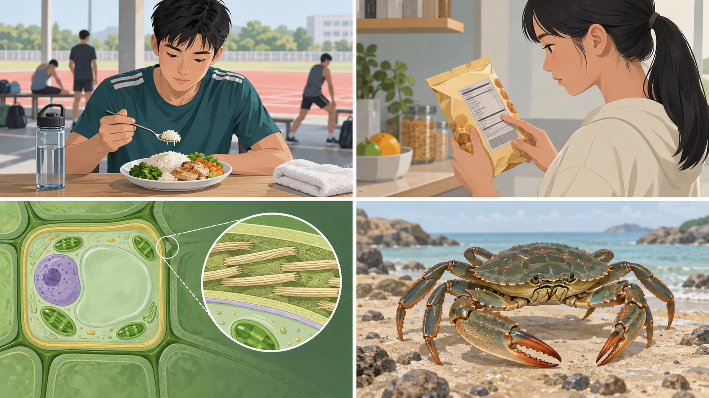
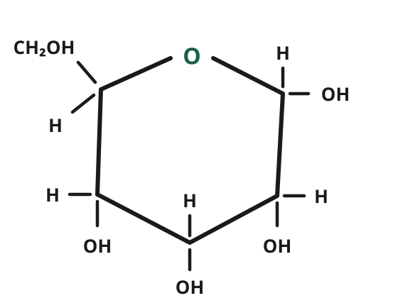
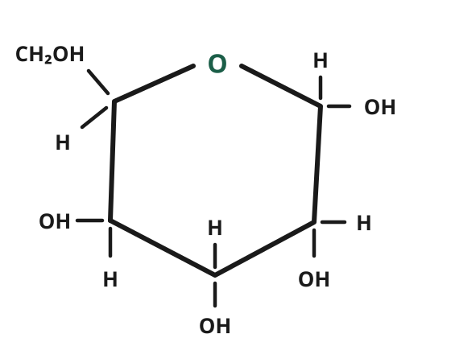
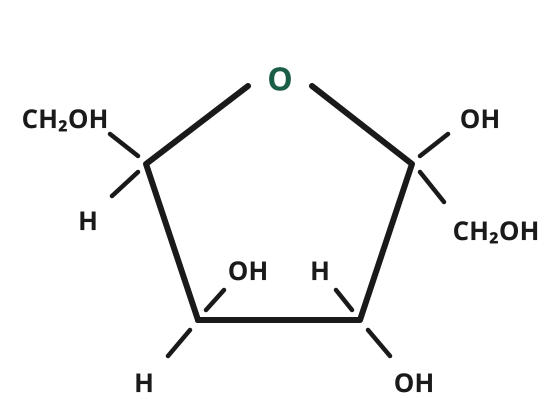
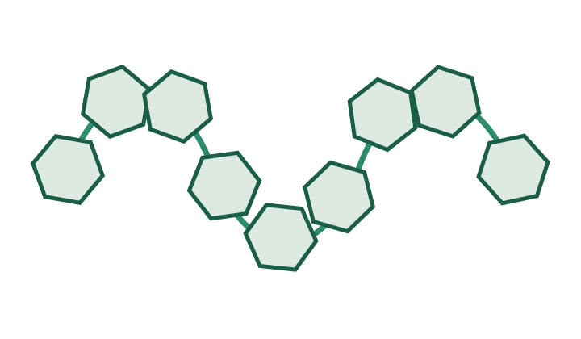
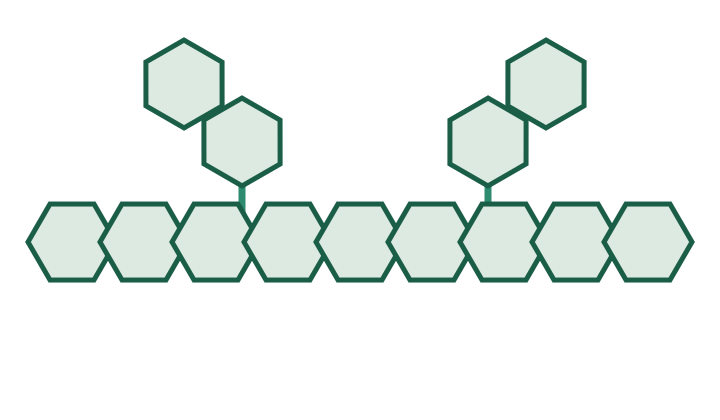
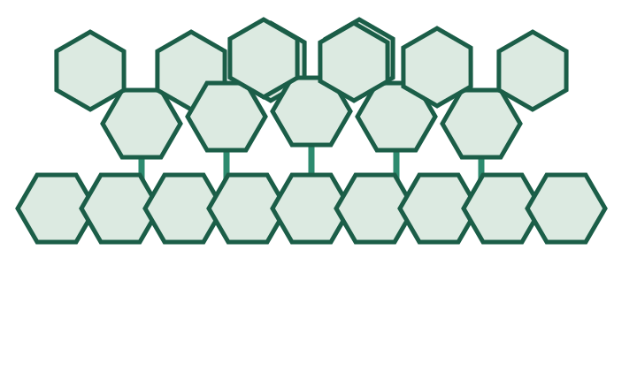
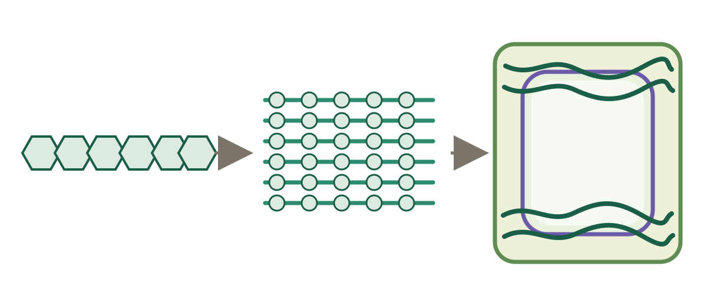
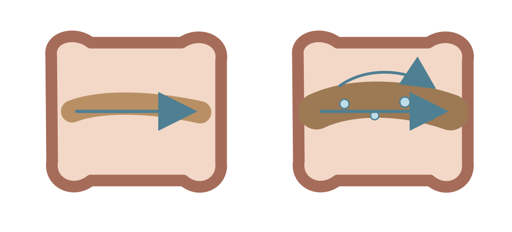
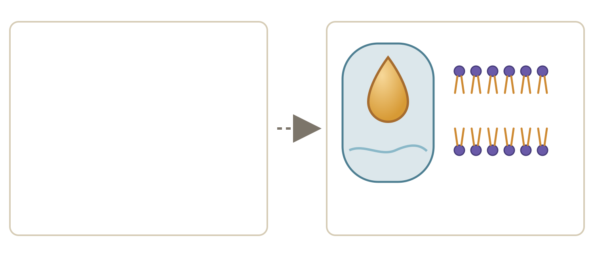

• Carbohydrate được cấu tạo như thế nào?
• Vì sao cùng là carbohydrate nhưng có loại cung cấp năng lượng, có loại dự trữ, còn có loại tạo cấu trúc bền chắc?
Bốn tình huống thực tế cho thấy các chất: Tinh bột (trong cơm/mì), Đường (trong khẩu phần), Cellulose (thành tế bào thực vật) và Chitin (vỏ động vật chân khớp).



Đường đơn (monosaccharide) là phân tử đường đơn giản nhất, không bị phân giải thành các đường nhỏ hơn trong điều kiện tiêu hóa bình thường.
Sucrose là loại đường phổ biến nhất trong đời sống, được kết tinh từ dịch ép thân cây mía (chứa 13–15%) hoặc củ cải đường.
Đường đôi (disaccharide) được hình thành từ hai phân tử đường đơn liên kết với nhau bằng liên kết glycosidic và đồng thời giải phóng một phân tử nước.

Cấu trúc 1
Cấu trúc 2
Cấu trúc 3Đường đa dự trữ có cấu trúc mạch dài phân nhánh hoặc cuộn xoắn, giúp tích trữ lượng lớn năng lượng gọn gàng trong tế bào mà không làm tăng áp suất thẩm thấu.

Khác với tinh bột và glycogen cuộn xoắn hoặc phân nhánh để dự trữ, cellulose và chitin có cách sắp xếp đặc biệt để tạo nên cấu trúc bảo vệ vững chắc.


Vận dụng các kiến thức đã học để giải thích hiện tượng dinh dưỡng thực tế và trả lời trọn vẹn câu hỏi trung tâm của bài.